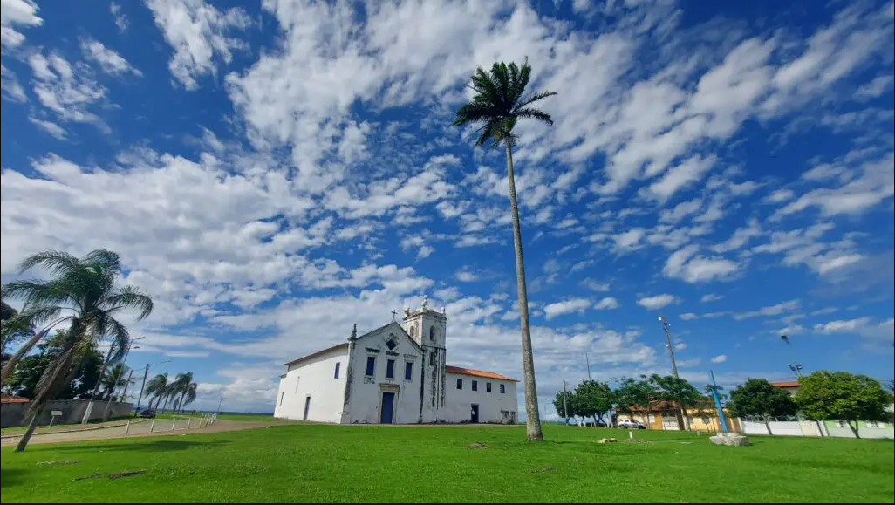

| Cidade | descritivo |
|---|---|
|  | A Serra é um importante município turístico brasileiro. Sua posição geográfica e suas facilidades logísticas fizeram com que se tornasse um dos mais significativos polos de negócios do Estado e uma das cidades mais prósperas do Brasil. O município também abriga patrimônios jesuíticos, ruínas históricas, diversas áreas de proteção ambiental e algumas das mais belas paisagens do Estado, com natureza exuberante e privilegiada pela mistura de mar, lagoas, serras e vales. HistóriaA Serra foi fundada em 1556 e tem uma rica história que começa com os povos indígenas Temiminós, que ocuparam a região nas capitanias hereditárias, e a chegada dos jesuítas no século XVI. A economia local foi impulsionada pela agropecuária e, mais tarde, pelo desenvolvimento da indústria e infraestrutura, com a criação da BR-101 e a instalação da Companhia Siderúrgica de Tubarão (CST). A cultura da cidade é marcada pela presença do congo e por patrimônios históricos como a Igreja dos Reis Magos e as ruínas do Queimado. |